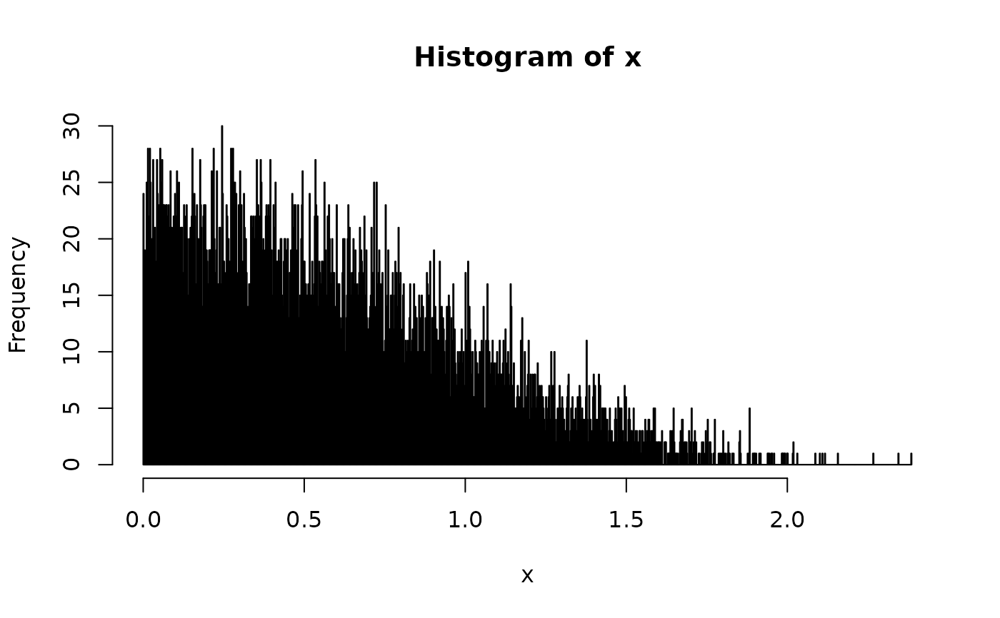
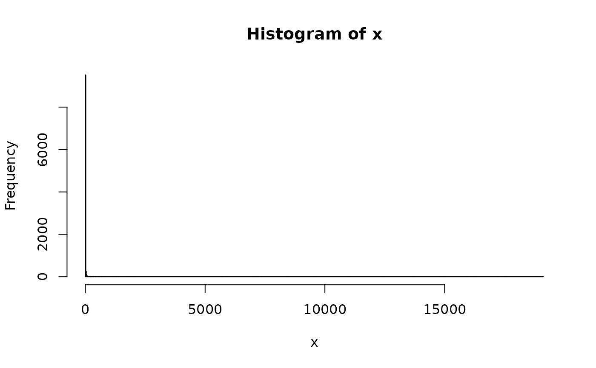
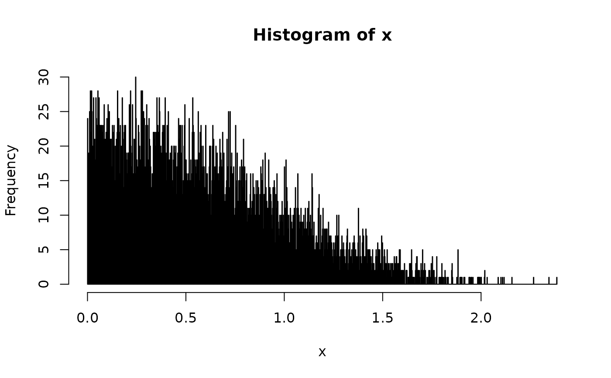
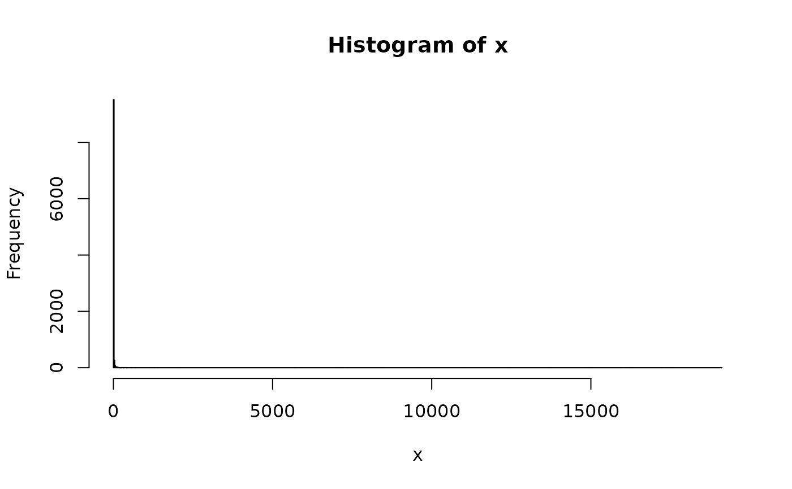
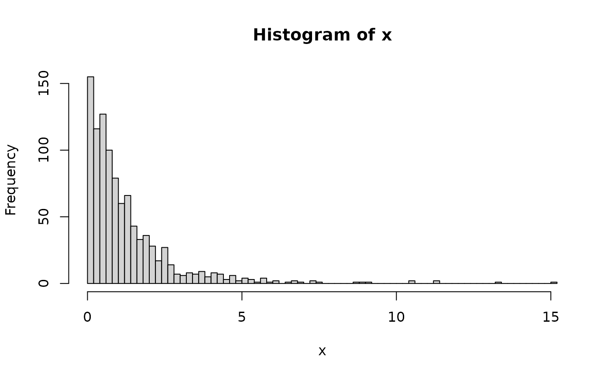
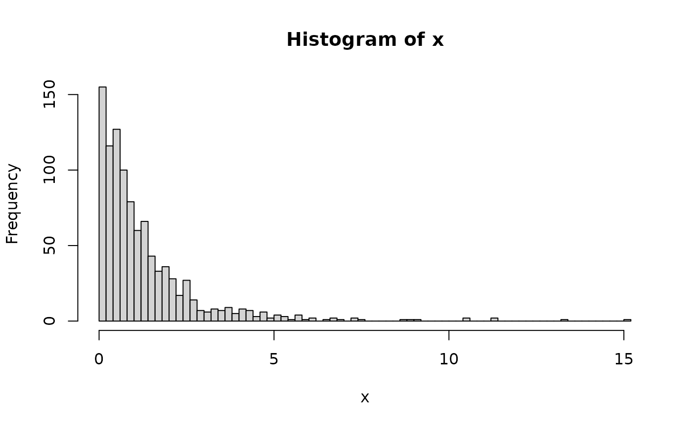

Random Number Generation
ssd_rburrIII3(n, shape1 = 1, shape2 = 1, scale = 1, chk = TRUE)
ssd_rgamma(n, shape = 1, scale = 1, chk = TRUE)
ssd_rgompertz(n, location = 1, shape = 1, chk = TRUE)
rgompertz(n, llocation = 0, lshape = 0)
ssd_rinvpareto(n, shape = 3, scale = 1, chk = TRUE)
ssd_rlgumbel(n, locationlog = 0, scalelog = 1, chk = TRUE)
rlgumbel(n, locationlog = 0, scalelog = 1)
ssd_rllogis_llogis(
n,
locationlog1 = 0,
scalelog1 = 1,
locationlog2 = 1,
scalelog2 = 1,
pmix = 0.5,
chk = TRUE
)
ssd_rllogis(n, locationlog = 0, scalelog = 1, chk = TRUE)
ssd_rlnorm_lnorm(
n,
meanlog1 = 0,
sdlog1 = 1,
meanlog2 = 1,
sdlog2 = 1,
pmix = 0.5,
chk = TRUE
)
ssd_rlnorm(n, meanlog = 0, sdlog = 1, chk = TRUE)
ssd_rweibull(n, shape = 1, scale = 1, chk = TRUE)Arguments
- n
number of observations.
- shape1
shape1 parameter.
- shape2
shape2 parameter.
- scale
scale parameter.
- chk
A flag specifying whether to check the arguments.
- shape
A string of the column in data for the shape aesthetic.
- location
location parameter.
- llocation
location parameter on the log scale.
- lshape
shape parameter on the log scale.
- locationlog
location on log scale parameter.
- scalelog
scale on log scale parameter.
- locationlog1
locationlog1 parameter.
- scalelog1
scalelog1 parameter.
- locationlog2
locationlog2 parameter.
- scalelog2
scalelog2 parameter.
- pmix
Proportion mixture parameter.
- meanlog1
mean on log scale parameter.
- sdlog1
standard deviation on log scale parameter.
- meanlog2
mean on log scale parameter.
- sdlog2
standard deviation on log scale parameter.
- meanlog
mean on log scale parameter.
- sdlog
standard deviation on log scale parameter.
Functions
ssd_rburrIII3(): Random Generation for BurrIII Distributionssd_rgamma(): Random Generation for Gamma Distributionssd_rgompertz(): Random Generation for Gompertz Distributionrgompertz(): Random Generation for Gompertz Distribution![[Deprecated]](figures/lifecycle-deprecated.svg)
ssd_rinvpareto(): Random Generation for Inverse Pareto Distributionssd_rlgumbel(): Random Generation for log-Gumbel Distributionrlgumbel(): Random Generation for log-Gumbel Distributionssd_rllogis_llogis(): Random Generation for Log-Logistic/Log-Logistic Mixture Distributionssd_rllogis(): Random Generation for Log-Logistic Distributionssd_rlnorm_lnorm(): Random Generation for Log-Normal/Log-Normal Mixture Distributionssd_rlnorm(): Random Generation for Log-Normal Distributionssd_rweibull(): Random Generation for Weibull Distribution
Examples
set.seed(50)
hist(ssd_rburrIII3(10000), breaks = 1000)
 set.seed(50)
hist(ssd_rgamma(10000), breaks = 1000)
set.seed(50)
hist(ssd_rgompertz(10000), breaks = 1000)

set.seed(50)
hist(ssd_rinvpareto(10000), breaks = 1000)
set.seed(50)
hist(ssd_rlgumbel(10000), breaks = 1000)

set.seed(50)
hist(ssd_rllogis_llogis(10000), breaks = 1000)
set.seed(50)
hist(ssd_rllogis(10000), breaks = 1000)
set.seed(50)
hist(ssd_rgamma(10000), breaks = 1000)
set.seed(50)
hist(ssd_rgompertz(10000), breaks = 1000)

set.seed(50)
hist(ssd_rinvpareto(10000), breaks = 1000)
set.seed(50)
hist(ssd_rlgumbel(10000), breaks = 1000)

set.seed(50)
hist(ssd_rllogis_llogis(10000), breaks = 1000)
set.seed(50)
hist(ssd_rllogis(10000), breaks = 1000)
 set.seed(50)
hist(ssd_rlnorm_lnorm(10000), breaks = 1000)
set.seed(50)
hist(ssd_rlnorm(10000), breaks = 1000)
set.seed(50)
hist(ssd_rweibull(10000), breaks = 1000)

set.seed(50)
hist(ssd_rlnorm_lnorm(10000), breaks = 1000)
set.seed(50)
hist(ssd_rlnorm(10000), breaks = 1000)
set.seed(50)
hist(ssd_rweibull(10000), breaks = 1000)
